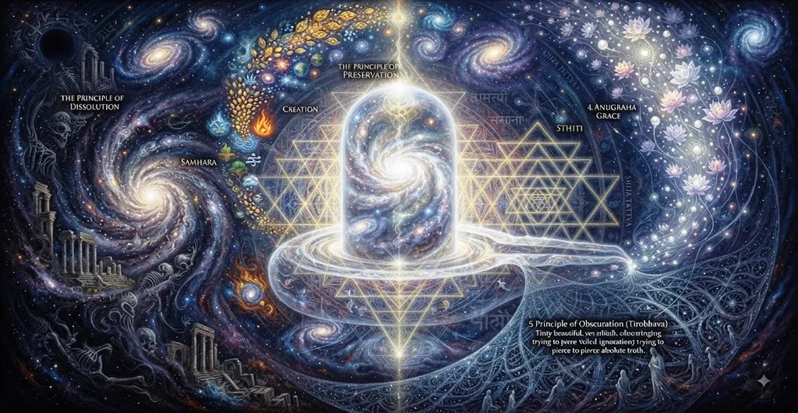

शिव का सिद्धांत
कैलाश संहिता का सोलहवां अध्याय शिव के सिद्धांत (शिव तत्व) की पड़ताल करता है, जिसमें भगवान शिव के सर्वोच्च सत्तामूलक सत्य और दार्शनिक आधार का विवरण दिया गया है।
ऋषि सुता बताते हैं कि कैसे संपूर्ण ब्रह्मांड शुद्ध चेतना के इस अद्वितीय, अपरिवर्तनीय आधार पर निर्भर करता है।
यह अध्याय साधक की समझ को बाह्य अनुष्ठान पूजा से गहन आध्यात्मिक अनुभूति तक उन्नत करता है।
अध्याय 16 की मुख्य बातें
शिव तत्व
समस्त अस्तित्व में अंतर्निहित मूलभूत तत्वमीमांसा सिद्धांत का अन्वेषण करता है।
शुद्ध चेतना
शिव को सार्वभौमिक जागरूकता के अंतिम, अपरिवर्तनीय आधार के रूप में प्रकट करता है।
शिव और शक्ति
स्थैतिक चेतना और गतिशील ऊर्जा के अविभाज्य मिलन की जाँच करता है।
रूप से परे
भक्त के दृष्टिकोण को भौतिक मूर्तियों से पूर्ण वास्तविकता में परिवर्तित करता है।
भ्रम से मुक्ति
दर्शाता है कि कैसे शिव के सिद्धांत को समझने से अज्ञानता और बंधन दूर हो जाते हैं।
अद्वैत का सेतु
अध्याय 17 में साधक को शिव की अद्वैतवादी प्रकृति की खोज के लिए तैयार किया गया है।
इस अध्याय में मुख्य विषय
अस्तित्व का ऑन्टोलॉजिकल फाउंडेशन
ऋषि सुता बताते हैं कि ब्रह्मांड में सब कुछ - प्रकट और अव्यक्त, भौतिक और आध्यात्मिक - अपने अस्तित्व के अंतिम आधार के रूप में भगवान शिव पर निर्भर है।
इस मूलभूत सिद्धांत के बिना, कुछ भी अस्तित्व में नहीं रह सकता, टिक नहीं सकता, या स्रोत पर वापस नहीं लौट सकता।
शिव तत्व का सच्चा स्वरूप
शिव तत्व को शुद्ध, स्वयं-प्रकाशमान चेतना के रूप में परिभाषित किया गया है जो समय, परिवर्तन या क्षय से अछूता रहता है।
यह सभी जीवित प्राणियों के भीतर का मूक साक्षी है, जो सृष्टि से बंधे बिना सृष्टि की लीला को देख रहा है।
चेतना और ऊर्जा का सामंजस्य
अध्याय इस बात पर जोर देता है कि शिव (चेतना) और शक्ति (ऊर्जा) एक अविभाज्य वास्तविकता के दो पहलू हैं।
जबकि शिव अपरिवर्तनीय पृष्ठभूमि बने हुए हैं, शक्ति नामों और रूपों के गतिशील ब्रह्मांड को उत्पन्न करती है।
शिव के भीतर सृजन और विघटन
प्रक्षेपण, रखरखाव और वापसी के सभी ब्रह्मांडीय चक्र शिव के सिद्धांत के विशाल विस्तार के भीतर सहजता से होते हैं।
ब्रह्माण्ड उनसे समुद्र की लहरों की तरह उत्पन्न होता है और शांतिपूर्वक उन्हीं में विलीन हो जाता है।
निरपेक्षता का एहसास करने के लिए रूप को पार करना
जबकि शुरुआती लोगों के लिए भौतिक मूर्तियाँ आवश्यक हैं, उन्नत साधकों को निराकार सत्य को समझने के लिए शिव तत्व का चिंतन करना चाहिए।
बोध द्वंद्व के भ्रम को तोड़ देता है और हर जगह मौजूद एकमात्र दिव्यता को प्रकट करता है।
शिवतत्त्व को जानने का फल
ऋषि सुता ने घोषणा की कि जो लोग शिव के सिद्धांत पर ध्यान करते हैं वे जीवित रहते हुए मुक्ति (जीवनमुक्ति) प्राप्त करते हैं।
वे भय पर विजय पाते हैं, दुःख से परे जाते हैं और परम चेतना की शांति में शाश्वत विश्राम करते हैं।
अध्याय 17 की ओर
अध्याय 16 में शिव के सिद्धांत को स्थापित करने के बाद, ऋषि सुता अध्याय 17, 'शिव की अद्वैतवादी प्रकृति' में परिवर्तन करते हैं।
अध्याय 17 गहन अद्वैत वास्तविकता की पड़ताल करता है जहां व्यक्तिगत आत्मा और सर्वोच्च शिव को एक के रूप में पहचाना जाता है।
अध्याय 16 की प्रमुख शिक्षाएँ
परम आधार
शिव वह मूलभूत वास्तविकता है जिस पर सारा अस्तित्व बना हुआ है।
शुद्ध जागरूकता
शिव तत्व कालातीत, अपरिवर्तनीय और स्वयं प्रकाशमान चेतना है।
अविभाज्य शक्ति
चेतना और गतिशील ऊर्जा एक एकीकृत दिव्य वास्तविकता के रूप में कार्य करती हैं।
पारगमन रूप
मूर्त प्रतीकों से पूर्ण के निराकार सत्य की ओर बढ़ना।
अज्ञान का नाश
शिव तत्व का चिंतन करने से सांसारिक मोह-माया के बंधन टूट जाते हैं।
शाश्वत स्वतंत्रता
शिव तत्व का एहसास सर्वोच्च मुक्ति और आंतरिक शांति प्रदान करता है।
आध्यात्मिक चिंतन
जब हम शिव के सिद्धांत पर चिंतन करते हैं, तो हम शुद्ध चेतना की शांत, चमकदार स्क्रीन को पहचानने के लिए दुनिया की बदलती स्क्रीन से परे देखते हैं। उस अनुभूति में, हम पाते हैं कि जिसे हम बाहरी रूप से खोजते हैं वह हमेशा हमारा अपना आंतरिक स्वभाव रहा है।
अध्याय 16 का संदेश जीना
दैनिक गतिविधियों के बीच याद रखें कि आपके विचारों को देखने वाली चेतना कोई और नहीं बल्कि शिव हैं।
क्षणिक रूपों में अंतर्निहित अमर वास्तविकता को पहचानकर उनके प्रति गहरे लगाव को छोड़ें।
आंतरिक शांति विकसित करें और अपने मन को शिव तत्व की विशाल, अटल शांति में आराम करने दें।
प्रमुख आध्यात्मिक अवधारणाएँ
भगवान शिव का सर्वोच्च सत्तामूलक सिद्धांत और पूर्ण वास्तविकता।
शुद्ध, स्व-प्रकाशमान चेतना जो दिव्य सार का निर्माण करती है।
स्थैतिक चेतना और गतिशील ऊर्जा का सामंजस्यपूर्ण और अविभाज्य मिलन।
वह अंतिम अंतर्निहित आधार जिस पर ब्रह्मांड टिका हुआ है।
शिव की प्राप्ति के माध्यम से जीवित रहते हुए आध्यात्मिक मुक्ति प्राप्त हुई।
अध्याय 17 में अद्वैत बोध की ओर प्रकाशमान परिवर्तन।
अध्याय सारांश
कैलास संहिता अध्याय 16 शिव के सिद्धांत को प्रस्तुत करता है। अस्तित्व के तात्विक आधार, शुद्ध चेतना की प्रकृति, शिव और शक्ति के सामंजस्य और मुक्ति के लिए पारगमन के मार्ग की खोज करते हुए, यह अध्याय साधक को गहन आध्यात्मिक समझ में ले जाता है। यह अध्याय 17, 'शिव की अद्वैतवादी प्रकृति', आत्मा और सर्वोच्च की परम एकता की खोज का मार्ग प्रशस्त करता है।
अक्सर पूछे जाने वाले प्रश्न
1. कैलास संहिता अध्याय 16 का प्राथमिक विषय क्या है?
अध्याय 16 शिव के सिद्धांत (शिव तत्व) की पड़ताल करता है, जिसमें भगवान शिव की सर्वोच्च सत्तावादी वास्तविकता और दार्शनिक आधार का विवरण दिया गया है।
2. हिंदू दर्शन में शिव तत्व क्या दर्शाता है?
शिव तत्व चेतना के उस परम, अपरिवर्तनीय आधार का प्रतीक है जो संपूर्ण ब्रह्मांड में व्याप्त है और उसे बनाए रखता है।
3. अध्याय 16 पिछले अध्याय पर कैसे आधारित है?
जबकि अध्याय 15 भौतिक रूपों और पूजा की मूर्तियों पर केंद्रित है, अध्याय 16 उन रूपों में अंतर्निहित शुद्ध दार्शनिक और आध्यात्मिक सत्य में परिवर्तन करता है।
4. शिव सिद्धांत के अनुसार चेतना और सृष्टि के बीच क्या संबंध है?
सृष्टि सर्वोच्च ऊर्जा (शक्ति) के साथ एकजुट होकर सर्वोच्च चेतना (शिव) की अभिव्यक्ति के रूप में उभरती है, जो एक एकीकृत वास्तविकता के रूप में कार्य करती है।
5. शिव तत्व को समझने से कौन सी आध्यात्मिक अनुभूति प्राप्त होती है?
शिव तत्व को समझने से साधक को भ्रम (माया) से मुक्ति मिलती है और सर्वोच्च चेतना के साथ उसकी आवश्यक पहचान का प्रत्यक्ष एहसास होता है।
6. अध्याय 16 के बाद नेविगेशन के लिए अगला अध्याय कौन सा है?
नेविगेशन के लिए अगला अध्याय अध्याय 17 है, जिसका शीर्षक 'शिव की अद्वैतवादी प्रकृति' है।
"शिव तत्व शुद्ध चेतना का शाश्वत, अपरिवर्तनीय प्रकाश है जिसमें संपूर्ण ब्रह्मांड उगता है, चमकता है और विश्राम करता है।"
कैलाश संहिता के माध्यम से जारी रखें
अध्याय 16 में शिव के सिद्धांत का विवरण दिया गया है। अध्याय 17, शिव की अद्वैतवादी प्रकृति को जारी रखें।